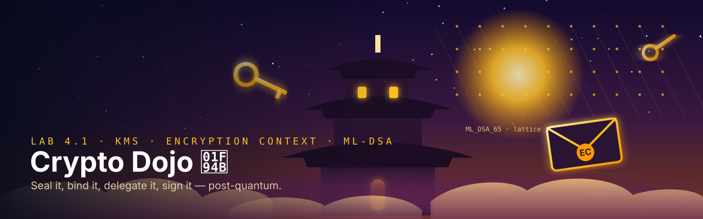
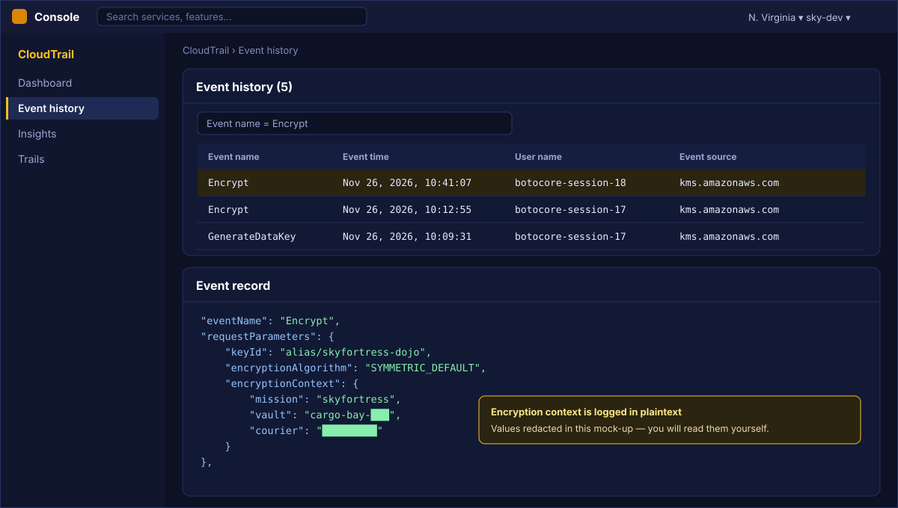
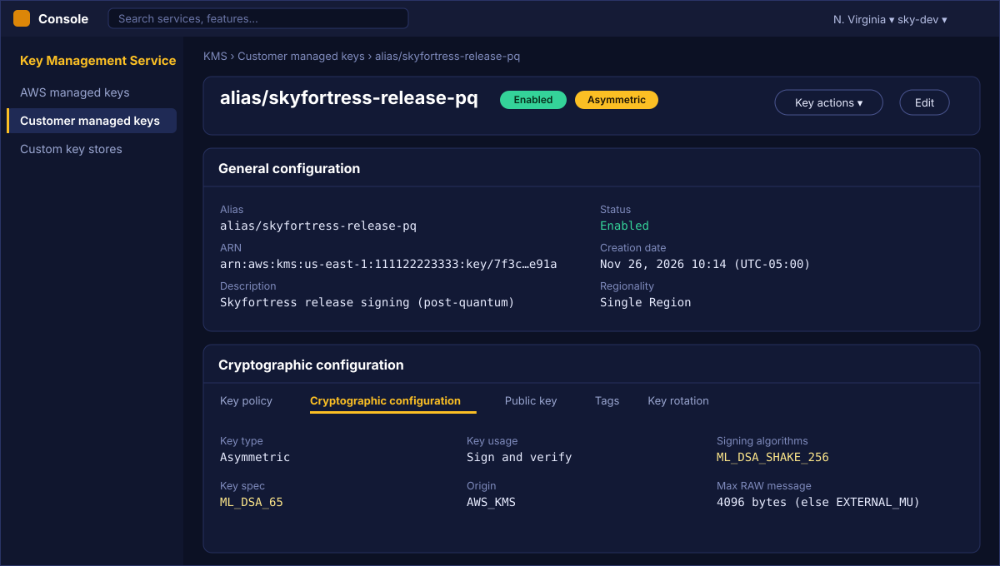

Crypto Dojo 🥋
Goal: build envelope encryption by hand, make encryption context do authorization work, delegate with a constrained grant, use CloudTrail as a forensic oracle to crack the Kraken's dead drop, and sign a release with a post-quantum key.
Files: envelope.py · vault_drop.py · key-policy.json · trust-policy.json · release-manifest.json
Follow the 12 numbered steps. Each one ends in output you can compare with the screenshots on this page.
Goal: recover the dead-drop secret and ship a signed release manifest.
Constraints: the app role has no IAM policy; only the key policy and a grant may authorize it. No secrets in encryption context.
Done when: (1) decrypting with the wrong context fails in KMS, not in AES-GCM; (2) a courier grant decrypts only vault=cargo-bay-7; (3) kms verify returns true for the real manifest and fails for a one-byte change; (4) you've captured flag 4.1.
Steps
- Enter the dojo
Set up variables you'll reuse all lab.
cd ~/skyfortress/labs/day4/crypto-dojo export AWS_PROFILE=sky-dev AWS_REGION=us-east-1 # never practise on the management account export ACCOUNT_ID=$(aws sts get-caller-identity --query Account --output text) pip3 install --user -q boto3 cryptography echo "dojo ready in $ACCOUNT_ID" - Forge the dojo key
Create a symmetric KMS key with a tag (for ABAC later) and a friendly alias.
KEY_ID=$(aws kms create-key \ --description "Skyfortress Day 4 crypto dojo" \ --tags TagKey=project,TagValue=skyfortress \ --query KeyMetadata.KeyId --output text) aws kms create-alias --alias-name alias/skyfortress-dojo --target-key-id "$KEY_ID" aws kms describe-key --key-id alias/skyfortress-dojo \ --query 'KeyMetadata.{Spec:KeySpec,Usage:KeyUsage,Origin:Origin,Manager:KeyManager}'{ "Spec": "SYMMETRIC_DEFAULT", "Usage": "ENCRYPT_DECRYPT", "Origin": "AWS_KMS", "Manager": "CUSTOMER" }
Expected output.
SYMMETRIC_DEFAULTis AES-256-GCM inside the HSM, which is already considered quantum-resistant. - Seal a secret with envelope encryption
Read
envelope.pyfirst (it's short and heavily commented), then seal a file.echo "Coordinates of the spare coffee depot: L4, sector 9" > secret.txt python3 envelope.py encrypt --in secret.txt --out secret.env.json \ --ctx project=skyfortress --ctx vault=cargo-bay-7 jq . secret.env.json python3 envelope.py decrypt --in secret.env.json \ --ctx project=skyfortress --ctx vault=cargo-bay-7$ python3 envelope.py encrypt --in secret.txt --out secret.env.json --ctx project=skyfortress --ctx vault=cargo-bay-7 sealed secret.txt -> secret.env.json under arn:aws:kms:us-east-1:111122223333:key/0b7d…c41e encryption context keys: ['project', 'vault'] (values are NOT stored — you must remember them) $ jq . secret.env.json { "v": 1, "kms_key_id": "arn:aws:kms:us-east-1:111122223333:key/0b7d…c41e", "wrapped_key": "AQIDAHh…(184 bytes, base64)…", "nonce": "3q2+7wABAgMEBQYH", "ciphertext": "k4Vf…", "ec_keys": ["project", "vault"] } $ python3 envelope.py decrypt --in secret.env.json --ctx project=skyfortress --ctx vault=cargo-bay-7 Coordinates of the spare coffee depot: L4, sector 9
Expected output. Your key ID and ciphertext will differ. The plaintext data key is never written anywhere.
Notice the envelope stores the context keys but not the values. Whoever decrypts must know which vault this belongs to.
- The wrong context
You decrypt with
vault=cargo-bay-8instead ofcargo-bay-7. Does KMS hand back the data key and AES-GCM fail locally, or does KMS refuse outright? And which error code do you expect?Reveal
KMS refuses with
InvalidCiphertextException. The EC is authenticated data on the wrapped data key, so KMS can't unwrap it and never releases the data key. Our extra AES-GCM AAD binding is belt-and-braces: it protects the payload even if someone wraps the same data key under a different context.python3 envelope.py decrypt --in secret.env.json \ --ctx project=skyfortress --ctx vault=cargo-bay-8$ python3 envelope.py decrypt --in secret.env.json --ctx project=skyfortress --ctx vault=cargo-bay-8 KMS said no: InvalidCiphertextException — wrong key, wrong context, or no permission.
Expected output. Note the misleading exception name: KMS doesn't say "wrong context", because that would help an attacker enumerate contexts.
- Make the context do authorization
Create an application role and a key policy that lets it use the key only when
project=skyfortressand only with the context keysprojectandvault.sed "s/ACCOUNT_ID/$ACCOUNT_ID/g" trust-policy.json > /tmp/trust.json aws iam create-role --role-name skyfortress-dojo-app \ --assume-role-policy-document file:///tmp/trust.json >/dev/null sleep 10 # IAM is eventually consistent; KMS validates principals in key policies sed "s/ACCOUNT_ID/$ACCOUNT_ID/g" key-policy.json > /tmp/key-policy.json aws kms put-key-policy --key-id "$KEY_ID" --policy-name default \ --policy file:///tmp/key-policy.json aws kms get-key-policy --key-id "$KEY_ID" --policy-name default --output text | jq '.Statement[].Sid'Why the first statement mattersEnableIAMPoliciesInThisAccountdelegates to IAM in your account. Delete it and only the dojo-app role could ever touch this key — including administering it. KMS's lockout safety check will push back, but in production use a separate key-admin role rather than:root+kms:*. - Become the app and test the boundary
Assume the role in a subshell and try the three cases. Note the app role has no IAM policy at all — the key policy alone authorizes it.
creds=$(aws sts assume-role --role-arn arn:aws:iam::$ACCOUNT_ID:role/skyfortress-dojo-app \ --role-session-name dojo --query Credentials --output json) ( export AWS_ACCESS_KEY_ID=$(echo "$creds" | jq -r .AccessKeyId) \ AWS_SECRET_ACCESS_KEY=$(echo "$creds" | jq -r .SecretAccessKey) \ AWS_SESSION_TOKEN=$(echo "$creds" | jq -r .SessionToken) echo "--- 1: right project (expect success)" python3 envelope.py decrypt --in secret.env.json --ctx project=skyfortress --ctx vault=cargo-bay-7 echo "--- 2: forbidden project (expect AccessDenied)" echo hi > t.txt; python3 envelope.py encrypt --in t.txt --out t.json --ctx project=kraken --ctx vault=x echo "--- 3: extra context key (expect AccessDenied)" python3 envelope.py encrypt --in t.txt --out t.json --ctx project=skyfortress --ctx vault=x --ctx owner=me )Case 3 uses the right project but adds an extra context key,
owner=me. The key policy only checkskms:EncryptionContext:project… so is case 3 allowed?Reveal
No. The policy also uses
kms:EncryptionContextKeyswithForAllValues:StringEqualsagainst["project","vault"], so any unexpected key fails the condition. Without that second condition, callers could smuggle arbitrary extra context into your audit trail.--- 1: right project (expect success) Coordinates of the spare coffee depot: L4, sector 9 --- 2: forbidden project (expect AccessDenied) Traceback (most recent call last): … (abridged) botocore.exceptions.ClientError: An error occurred (AccessDeniedException) when calling the GenerateDataKey operation: User: arn:aws:sts::111122223333:assumed-role/skyfortress-dojo-app/dojo is not authorized to perform: kms:GenerateDataKey on this resource because no resource-based policy allows the kms:GenerateDataKey action --- 3: extra context key (expect AccessDenied) Traceback (most recent call last): … (abridged) botocore.exceptions.ClientError: An error occurred (AccessDeniedException) when calling the GenerateDataKey …
Expected output (wording of the AccessDenied message varies slightly by SDK version).
Case 1 prints the coffee depot. Cases 2 and 3 die with
AccessDeniedException, notInvalidCiphertextException— the policy said no before any cryptography happened. - Delegate narrowly with a grant
A courier service needs to decrypt only cargo-bay-7 envelopes, for one shift. A grant with an encryption-context constraint is the perfect tool — and needs no key policy change.
aws iam create-role --role-name skyfortress-courier \ --assume-role-policy-document file:///tmp/trust.json >/dev/null && sleep 10 GRANT=$(aws kms create-grant --key-id "$KEY_ID" \ --grantee-principal arn:aws:iam::$ACCOUNT_ID:role/skyfortress-courier \ --operations Decrypt \ --constraints EncryptionContextSubset={vault=cargo-bay-7} \ --name courier-shift-1 --output json) echo "$GRANT" | jq . aws kms list-grants --key-id "$KEY_ID" \ --query 'Grants[].{Name:Name,Ops:Operations,Constraints:Constraints}'Assume
skyfortress-courier(same pattern as the previous step) and confirm it can decryptsecret.env.jsonbut not an envelope sealed withvault=cargo-bay-9. Then retire the grant:aws kms revoke-grant --key-id "$KEY_ID" --grant-id $(echo "$GRANT" | jq -r .GrantId)Courier gets AccessDenied right after creating the grant?
Grants are eventually consistent. Production code passes the
GrantTokenfromcreate-grantin theGrantTokensparameter of the decrypt call to use the grant immediately. Or wait ~30 seconds. - The Kraken's dead drop
Owlsley forced a captured Kraken courier to seal a secret with your key under a random encryption context — which it then "forgot". Run the drop and try to decrypt the obvious way:
python3 vault_drop.py alias/skyfortress-dojo aws kms decrypt --ciphertext-blob fileb://vault.bin \ --encryption-context mission=skyfortress # nopeYou can't brute-force the context. But you know who writes down every KMS request, including its encryption context, in plaintext…
Hint 1
CloudTrail event history covers management events for 90 days and KMS
Encryptcalls are management events. Give it ~5 minutes to appear.
SCREEN 4.1a What you're hunting for: the encryptionContextblock in anEncryptevent. Values are redacted here; you'll find them yourself. Illustrative mock-up; the live console layout may differ.Solution
aws cloudtrail lookup-events \ --lookup-attributes AttributeKey=EventName,AttributeValue=Encrypt \ --max-results 5 --query 'Events[].CloudTrailEvent' --output text \ | jq -c 'select(.requestParameters.encryptionContext.mission=="skyfortress") | .requestParameters.encryptionContext' # then, using the values you found: aws kms decrypt --ciphertext-blob fileb://vault.bin \ --encryption-context mission=skyfortress,vault=cargo-bay-NNN,courier=WORD \ --query Plaintext --output text | base64 -d; echoLesson: EC is not secret — it's an audit trail. Never put sensitive values in it. Conversely, it's a superb forensic index: "which vaults did the compromised role decrypt?" is one query.
- Forge a post-quantum signing key
Create an ML-DSA-65 key for signing release manifests and inspect it.
PQ_KEY=$(aws kms create-key --key-spec ML_DSA_65 --key-usage SIGN_VERIFY \ --description "Skyfortress release signing (post-quantum)" \ --tags TagKey=project,TagValue=skyfortress \ --query KeyMetadata.KeyId --output text) aws kms create-alias --alias-name alias/skyfortress-release-pq --target-key-id "$PQ_KEY" aws kms describe-key --key-id "$PQ_KEY" \ --query 'KeyMetadata.{Spec:KeySpec,SigningAlgorithms:SigningAlgorithms}'{ "Spec": "ML_DSA_65", "SigningAlgorithms": [ "ML_DSA_SHAKE_256" ] }
Expected output. ML-DSA keys support exactly one signing algorithm,
ML_DSA_SHAKE_256(FIPS 204 with SHAKE256 hashing inside the scheme).
SCREEN 4.1b Your post-quantum key in the console: Cryptographic configuration tab. Illustrative mock-up; the live console layout may differ. - Sign the release manifest
The manifest is under 4 KB, so we sign the raw message.
aws kms sign --key-id alias/skyfortress-release-pq \ --message fileb://release-manifest.json --message-type RAW \ --signing-algorithm ML_DSA_SHAKE_256 \ --query Signature --output text | base64 -d > release-manifest.sig ls -l release-manifest.sig # how big is a post-quantum signature?$ ls -l release-manifest.sig -rw-r--r--. 1 cloudshell-user cloudshell-user 3309 Nov 26 10:22 release-manifest.sig
Expected output. FIPS 204 fixes ML-DSA-65 signatures at exactly 3,309 bytes.
Compare: an Ed25519 signature is 64 bytes, ECDSA P-256 roughly 70. ML-DSA-65 is about 3.3 KB. Now imagine that in every JWT. RAW messages are capped at 4,096 bytes; for bigger artifacts you sign a 64-byte "external mu" (
--message-type EXTERNAL_MU) computed locally. - Tampering
Verify the genuine manifest, then change one character (the Kraken wants version 7.4.3 with "extra features") and verify again.
For the tampered file, does
kms verifyreturn"SignatureValid": false, or does it throw? (This decides how you write the check in a CI pipeline.)Reveal
It throws: KMS returns
KMSInvalidSignatureExceptionrather thanfalse. A pipeline that only checks the boolean and ignores the exit code fails open. Always treat a non-zero exit as "not verified".verify() { aws kms verify --key-id alias/skyfortress-release-pq \ --message fileb://$1 --message-type RAW --signing-algorithm ML_DSA_SHAKE_256 \ --signature fileb://release-manifest.sig --query SignatureValid 2>&1; } verify release-manifest.json sed 's/7.4.2/7.4.3/' release-manifest.json > tampered.json verify tampered.json aws kms get-public-key --key-id alias/skyfortress-release-pq \ --query PublicKey --output text | base64 -d > release-pq.pub.der ls -l release-pq.pub.der$ verify release-manifest.json true $ verify tampered.json An error occurred (KMSInvalidSignatureException) when calling the Verify operation: $ ls -l release-pq.pub.der -rw-r--r--. 1 cloudshell-user cloudshell-user 1974 Nov 26 10:24 release-pq.pub.der
Expected output. The DER-encoded ML-DSA-65 public key is about 2 KB (1,952-byte key plus ASN.1 wrapping).
Genuine:
true. Tampered: aKMSInvalidSignatureException. You also exported the public key, so build systems can verify offline without calling KMS — with any library that supports FIPS 204, such as OpenSSL 3.5 and newer. - Optional: probe post-quantum TLS
If you have OpenSSL ≥ 3.5 on a laptop (CloudShell's may be older), ask a KMS endpoint for the hybrid group:
openssl version openssl s_client -connect kms.us-east-1.amazonaws.com:443 \ -groups X25519MLKEM768 -brief </dev/null 2>&1 | grep -i -E 'protocol|group|temp key'A negotiated
X25519MLKEM768group means that connection is safe from harvest-now-decrypt-later. Then try-groups X25519to see the classical fallback.
Troubleshooting
| Symptom | Likely cause | Fix |
|---|---|---|
MalformedPolicyDocumentException on put-key-policy | The new role isn't visible to KMS yet, or ACCOUNT_ID wasn't substituted | Wait 10–20 s after create-role; grep ACCOUNT_ID /tmp/key-policy.json should print nothing |
| Case 1 also fails with AccessDenied | The policy statement for the app role didn't land, or you're in a different account than the key | aws kms get-key-policy … | jq '.Statement[].Sid'; check AWS_PROFILE in the subshell |
AccessDenied on sts assume-role | Role chaining from a session without sts:AssumeRole, or trust policy still has the placeholder | Run from the sky-dev admin session; inspect /tmp/trust.json |
Courier decrypt fails right after create-grant | Grant eventual consistency | Pass --grant-tokens with the token from create-grant, or wait ~30 s |
No Encrypt event in lookup-events | CloudTrail delivery lag, or you're querying another Region/account | Wait 5 minutes; confirm AWS_REGION=us-east-1 and AWS_PROFILE=sky-dev |
ValidationException on create-key --key-spec ML_DSA_65 | Old AWS CLI that doesn't know the key spec | aws --version; CloudShell updates regularly, otherwise use boto3 after pip3 install -U boto3 |
ABAC upgrade: tag skyfortress-dojo-app with project=skyfortress, delete the role-specific key policy statement, and instead grant access through an IAM policy using "aws:ResourceTag/project": "${aws:PrincipalTag/project}". Prove a second key tagged project=kraken is unusable by the same role — without touching any key policy.
# still in the sky-dev profile
aws kms schedule-key-deletion --key-id "$KEY_ID" --pending-window-in-days 7
aws kms schedule-key-deletion --key-id "$PQ_KEY" --pending-window-in-days 7
aws kms delete-alias --alias-name alias/skyfortress-dojo
aws kms delete-alias --alias-name alias/skyfortress-release-pq
aws iam delete-role --role-name skyfortress-dojo-app
aws iam delete-role --role-name skyfortress-courier
rm -f secret.txt secret.env.json t.txt t.json vault.bin tampered.json release-manifest.sig release-pq.pub.derSeven days is the minimum waiting period — and the reason it exists is that key deletion is irreversible: every byte encrypted under that key becomes unrecoverable. In production, alarm on ScheduleKeyDeletion and deny it via SCP for everyone but a break-glass role.